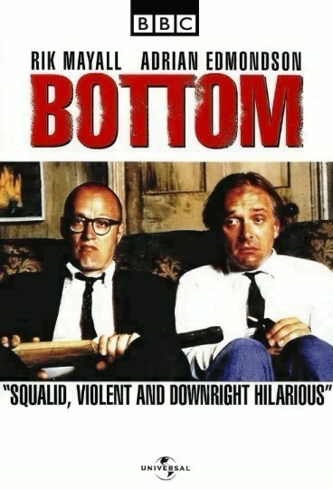

Kiki's Delivery Service (1989)
-poster.jpg)
This is the story of a young witch, named Kiki who is now 13 years old. But she is still a little green and plenty headstrong, but also resourceful, imaginative, and determined. With her trusty wisp of a talking cat named Jiji by her side she's ready to take on the world, or at least the quaintly European seaside village she's chosen as her new home.
All The President's Men (1976)
-poster.jpg)
In the run-up to the 1972 elections, Washington Post reporter Bob Woodward covers what seems to be a minor break-in at the Democratic Party National headquarters. He is surprised to find top lawyers already on the defense case, and the discovery of names and addresses of White House fund organizers on the accused further arouses his suspicions. The editor of the Post is prepared to run with the story and assigns Woodward and Carl Bernstein to it. They find the trail leading higher and higher in the White House.
The Iron Giant (1999)
-poster.jpg)
This is the story of a nine-year-old boy named Hogarth Hughes who makes friends with an innocent alien giant robot that came from outer space. Meanwhile, a paranoid U.S. Government agent named Kent Mansley arrives in town, determined to destroy the giant at all costs. It's up to Hogarth to protect him by keeping him at Dean McCoppin's place in the junkyard.
Bottom (1991)
Living in a squalid flat, perpetually unemployed, skint, bored, and sexually frustrated, virgin Richie Richard and carefree alcoholic Eddie Hitler are social outcasts at the bottom of the heap in society and spend their days scheming, bickering, and being sadistic to each other.

House Of Cards (1990)

Francis Urquhart is the Chief Whip of the Conservative Party. When Margaret Thatcher resigns as leader, he remains neutral and, after a general election in which the Conservatives are returned with a reduced majority, he fully expects the new Prime Minister, Henry Collingridge, to give him his just reward: a senior Cabinet post. When he's informed that he is to stay in his current position, he devises a plot to unseat Collingridge and ensure his own election as party leader which would make him Prime Minister.
Tinker Tailor Soldier Spy (1979)

George Smiley has been retired for about a year when he finds a friend from the Circus, his old outfit in British Intelligence, sitting in his living room. He is taken to the home of an advisor to the Prime Minister on intelligence matters, where he finds evidence that one of the men in the senior ranks of his old agency is a Russian spy. Smiley is asked to find him, without official access to any of the files in the Circus or letting on that anyone is under suspicion. With only a few old friends, his own powers of deduction, and secrecy as weapons, Smiley must unearth the spy who turned him out of the Circus.
Predator (1987)
-poster.jpg)
A team of special force ops, led by a tough but fair soldier, Major "Dutch" Schaefer, are ordered to assist CIA man, Colonel Al Dillon, on a rescue mission for potential survivors of a Helicopter downed over remote South American jungle. Not long after they land, Dutch and his team discover that they have been sent in under false pretenses. This deception turns out to be the least of their worries though, when they find themselves being methodically hunted by something not of this world.
Fight Club (1999)
-poster.jpg)
A nameless first person narrator (Edward Norton) attends support groups in attempt to subdue his emotional state and relieve his insomniac state. When he meets Marla (Helena Bonham Carter), another fake attendee of support groups, his life seems to become a little more bearable. However when he associates himself with Tyler (Brad Pitt) he is dragged into an underground fight club and soap making scheme. Together the two men spiral out of control and engage in competitive rivalry for love and power.
Howl's Moving Castle (2004)
-poster.jpg)
A love story between an 18-year-old girl named Sophie, cursed by a witch into an old woman's body, and a magician named Howl. Under the curse, Sophie sets out to seek her fortune, which takes her to Howl's strange moving castle. In the castle, Sophie meets Howl's fire demon, named Karishifâ. Seeing that she is under a curse, the demon makes a deal with Sophie--if she breaks the contract he is under with Howl, then Karushifâ will lift the curse that Sophie is under, and she will return to her 18-year-old shape.
2001 A Space Odyssey (1968)
-poster.jpg)
"2001" is a story of evolution. Sometime in the distant past, someone or something nudged evolution by placing a monolith on Earth (presumably elsewhere throughout the universe as well). Evolution then enabled humankind to reach the moon's surface, where yet another monolith is found, one that signals the monolith placers that humankind has evolved that far. Now mankind, assisted by artificial intelligence (such as HAL), must dare to encounter the monolith placers. If successful we will achieve the next step in evolution, whatever that may be.
Alien (1979)
-poster.jpg)
The crew of the commercial spaceship "Nostromo" is on its way home when the crew picks up a distress call from a distant moon. The crew is under obligation to investigate and the spaceship descends on the small planetoid afterward. After a rough landing, three crew members leave the spaceship to explore the area on the planetoid. At the same time as the crew discovers a hive colony of some unknown creature, the ship's computer deciphers the message to be a warning, not a distress call. When one of the eggs is disturbed, the crew realizes that it is not alone on the spaceship and it must deal with the consequences.
The Blues Brothers (1980)
-poster.jpg)
After the release of Jake Blues from prison, he and brother Elwood go to visit "The Penguin", the last of the nuns who raised them in an orphanage. They learn the Archdiocese will stop supporting the school and will sell the place to the Education Authority. The only way to keep the place open is if the $5,000 tax on the property is paid within 11 days. The Blues Brothers want to help, and decide to put their blues band back together and raise the money by staging a big gig. As they set off on their "mission from God" they seem to make more enemies along the way. Will they manage to come up with the money in time?
Dead Men Don't Wear Plaid (1982)
-poster.jpg)
Juliet Forrest is convinced that the death of her father (a prominent cheese scientist working on a secret recipe) was no accident. To prove it was murder, she enlists the services of private eye Rigby Reardon. He finds a slip of paper containing a list of people who are "The Friends and Enemies of Carlotta." Searching for answers, Rigby encounters assorted low-lifes: dangerous men and women who were the hallmarks of the classic detective movies of the 40's and 50's. Filmed in black and white and inter-cut with scenes from classic old movies.
The Sting (1973)
-poster.jpg)
Johnny Hooker, a small time grifter, unknowingly steals from Doyle Lonnegan, a big time crime boss. Lonnegan demands satisfaction for the insult and has Hooker's partner Luther killed. Hooker flees and seeks the help of Henry Gondorff, who is a master of the long con, to take Lonnegan for an enormous sum of money to even the score. They devise a complicated scheme and amass a talented group of other con artists who want their share of the reparations. The stakes are high in this game, and the con-men must not only deal with Lonnegan's murderous tendencies, but also other side players who want a piece of the action.
Primer (2004)
-poster.jpg)
Engineers Aaron, Abe, Robert and Phillip are working on an invention being built in Aaron's garage. During one of his tests with the invention running Abe discovers that rather than the invention being a protein super incubator, Abe, using himself as a guinea pig, and a very meticulous one at that, discovers that the invention can be used as a time machine.
Close Encounters Of The Third Kind (1977)
-poster.jpg)
Roy Neary, an Indiana electric lineman, finds his quiet and ordinary daily life turned upside down after a close encounter with a UFO, spurring him to an obsessed cross-country quest for answers as a momentous event approaches.